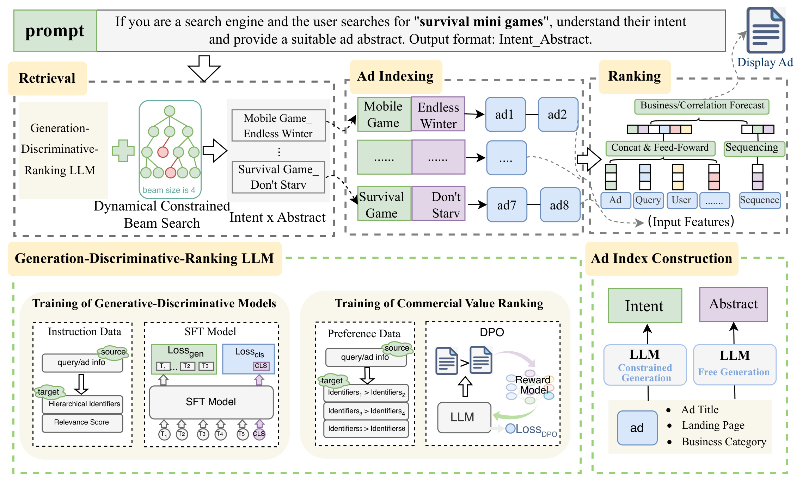
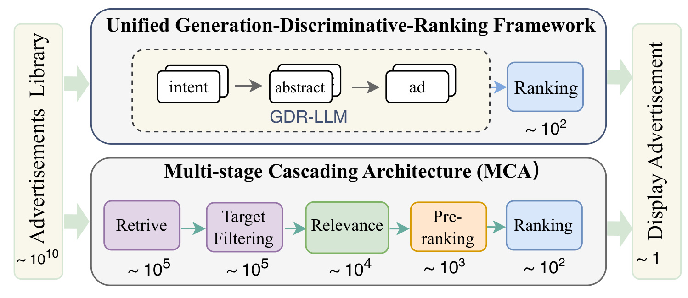
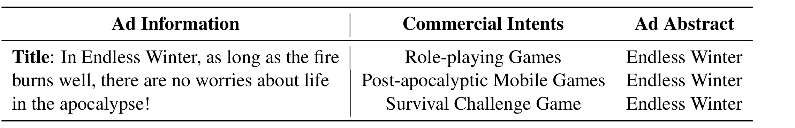
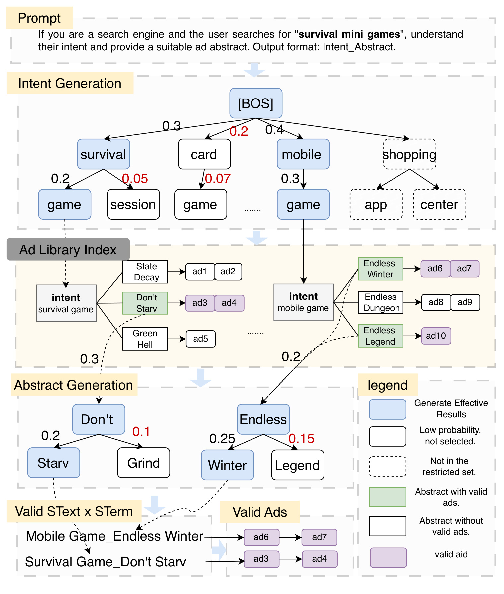
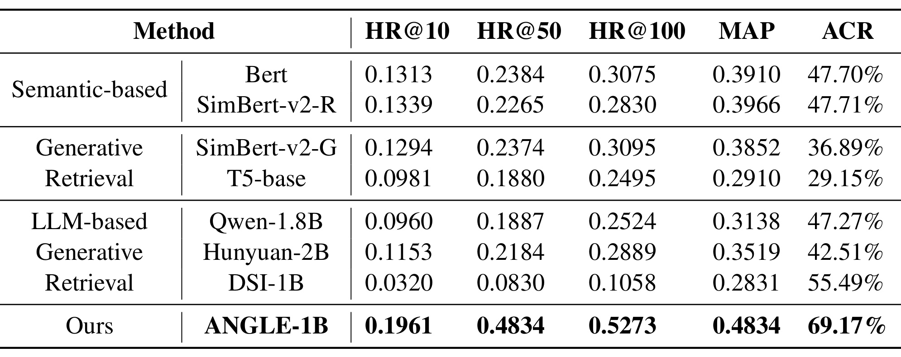
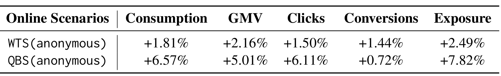
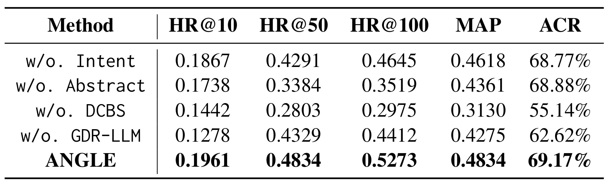

ANGLE：用分层语义文本与动态有效集实现广告生成召回
《One-Step Retrieval Framework for Real-Time Sponsored Search Ads Using Hierarchical Text Representations》（利用分层文本表示的实时搜索广告一步召回框架）由腾讯 Tongtong Liu、Renyu Zhang、Jiayu Ding、Hongchao Guo、Xintao Yang、He Wei、Zhaoyu Li、Haiyang Wu 撰写，2026 年 9 月 16 日公开于 arXiv。本文重点是把广告召回、相关性判别和商业价值学习装进同一个生成模型，并通过可更新的广告索引落到实际候选。尚未核验到本文独立代码或项目入口；下文依据公开论文主文和附录，区分作者报告、公式定义与工程推断。
传统广告检索各阶段独立优化，容易发生目标不一致和高潜候选过早淘汰；直接生成离散语义标识又要求模型学习大量广告映射，难以适应不断出现的新广告。如何让生成模型同时理解搜索意图、保留具体广告信息，并直接产出当前可投放的候选，是本文要解决的问题。
1. 背景和问题
搜索广告中的“找到广告”至少包含三个相互牵制的要求。用户给出查询后，候选必须符合当前意图；广告还要满足投放资格，不能只是语义相近；进入展示竞争时，它又必须具备足够的商业价值。论文讨论的传统系统将这些要求拆到召回、相关性、预排序和最终排序等阶段，通过逐级缩小候选规模控制成本。这个架构有明确工程理由：无法对整个广告库逐条运行昂贵的最终模型。然而，越靠前的模块能看到的信息和能使用的计算越少，其输出就越容易成为后续系统无法纠正的瓶颈。这里真正的问题不是阶段数量本身，而是各阶段保留下来的集合与最终目标之间可能不一致。
例如，一个广告在浅层语义模型中得分不高，但在结合用户历史、上下文和商业目标后可能很有价值。如果前面已经将它排除，最后的精排即使拥有更丰富特征，也无法把它重新找回来。反过来，只以宽泛的语义相似性召回大量广告，会把投放条件检查与细粒度判断留给后面，增加无效候选处理。作者因此把级联误差和独立训练的目标错位作为引言中的主要动机。不过，“存在这种结构性风险”和“本文实验证明全部增益都来自消除这一风险”是两个层次；后面的结果测量的是整套框架效果，没有直接观测每个旧阶段究竟误杀了多少最终高价值广告。
生成式检索提供了另一种入口：模型依据查询直接生成广告的检索地址，再由地址定位广告。这允许查询理解与候选选择一起优化，不必先为所有广告单独打分。常见地址是离散语义标识，通常由内容表示的量化编码得到。作者认为，这种地址并不是语言模型预训练中原生理解的自然语言，模型需要通过微调学习大量标识与广告之间的对应关系。当广告库不断新增、下线或更换素材时，这种学习和维护会成为成本。论文还指出，如果地址与广告一一对应，每生成一条地址只得到一个广告，会限制有限解码步数下的候选产出效率。这些批评针对作者比较的代表性路线，不意味着所有语义标识方法都必须采用一一映射，也不证明离散编码无法处理冷启动。
ANGLE 的选择是给广告一个由两部分组成的自然语言地址：粗粒度商业意图和细粒度广告摘要。前者回答“这是什么需求、品类或用途”，后者回答“具体是哪一个品牌、产品或核心服务”。这样的拆分把语言模型已有的类别知识和广告内容中的具体信息连在一起，而不是让模型单独记忆一个无语义编码。一个广告可以对应多个意图，一个意图与摘要组合也可以指向多个广告实例。因此模型输出的是可解释的索引键，而不是把整个广告库存储在参数中。这种设计的潜在价值来自表示和索引的协作：模型负责在语义空间选择，索引负责把选择映射到现存广告。
但自然语言地址也有自己的困难。单独使用意图会过于宽泛，同一类别下大量广告难以区分；单独使用摘要或品牌可能又缺少对需求的概括，同一产品可以满足的多个查询场景不容易被利用。自由生成的文本还有可能根本没有广告与之对应，或者虽然对应某个广告，却不满足当前用户的投放条件。简单地在生成结束后找最近邻，可以把不存在的文本纠正到已有地址，但这个纠正后的广告未必仍保持原来的语义和商业偏好。因而本文并不是仅仅把离散编码换成词语，它同时需要解决“词语如何组织成地址”“地址如何对应有效广告”和“生成概率为什么值得用于商业候选选择”三件事。
搜索场景对相关性尤其敏感。用户正在表达显式需求，商业收益高但偏离查询的广告，不能只因模型偏好就直接展示。论文为此把点击曝光日志中的标签用于判别头训练，并让商业偏好通过直接偏好优化影响生成分布。这使同一个模型同时承担生成和判断的任务，但需要保留监督口径的边界：点击可以作为相关性代理，却混合位置、素材吸引力、品牌熟悉度和曝光选择等因素；实际花费可以表征一种商业表现，却不等同于用户满意度或广告主长期回报。将这些信号联合起来能够缩短模型链路，并不会自动让不同利益相关方的目标完全一致。
另一项经常被标题掩盖的约束是广告系统的实时资格。某个广告能否向某个用户投放，可能由定向条件、当前供给状态等共同决定。同样的查询，不同用户对应的有效广告集合可以不同。若生成模型只在全局广告树上搜索，它可能把有限候选预算大量花在当前无效的分支上。ANGLE 将这部分检查前移到解码过程，按用户当前有效集动态限制可生成的摘要与意图。由此，它把传统系统中需要“召回后过滤”的一部分工作改成“在有效集合内生成”。这里的实时性由索引与约束系统提供，不能只归因于语言模型的知识更新。
论文最终保留了末级排序，作者在局限章节明确解释，动态创意选择和智能出价等复杂组件仍然依赖精排。线上落地也被描述为给排序队列提供补充候选。因此，“一步召回”应理解为跳过传统相关性与预排序等中间模型，将生成候选直接送往最终排序，而不是一次语言模型调用就完成投放、定价和展示。对推荐系统研究而言，本文最有迁移价值的是这个清楚的系统分工：让模型学习较统一的候选目标，用可更新索引承接商品或广告变化，用明确的可行集合约束保证输出可执行，同时保留暂时不适合参数化生成的后端职责。是否值得采用，最终需要在同等候选预算和实际在线成本下验证。
2. 方法
2.1 生成召回与精排的系统边界
ANGLE 的在线输入是用户查询及相应上下文，输出是将送入最终排序的广告集合。系统在查询侧运行生成、判别和商业排序联合训练的 GDR-LLM；广告侧预先生成分层文本并构建倒排索引，两侧通过“意图×摘要”相连接。模型生成可检索的文本地址，索引返回地址下的广告，最终排序继续处理广告、查询、用户及行为序列等特征。先理解这一连接关系，才能判断哪些计算发生在每次请求上，哪些计算发生在广告入库或更新时。

Figure 1 上半部分从左到右展示在线链路。输入提示要求模型理解“生存小游戏”这一查询的意图并给出广告摘要；左侧模型配合动态约束搜索，得到若干分层文本组合。中间广告索引把组合展开为实际广告，例如某种游戏类别加具体游戏名称可以连接到多个广告编号。右侧仍有完整的排序模块，输入包括广告、查询、用户和行为序列，经过拼接、前馈或序列处理后做商业及相关性预测。图中箭头说明了最重要的接口：语言模型产生的不是最终展示排序本身，候选必须先落到广告对象上才能进入既有精排。图里用于说明的束宽是四，不能把它当作实际部署的束宽；实现章节另报在线束宽六十四。
图的下半部分解释上面两个组件怎样准备。左下是生成和判别训练，输出序列的文本位置承担生成损失，特殊分类位置承担相关性损失；中下是商业价值偏好训练，使更有价值的文本地址获得更高的相对生成概率。右下则是广告侧索引构建：广告标题、落地页和业务类别提供内容信息，意图在受限范围内生成，摘要按作者描述自由生成。整张原图同时含训练和服务模块，不表示线上每次请求都重新训练模型或运行广告侧大模型。这样的划分有助于把较重的内容理解成本放到离线，把查询侧预算集中在短序列生成和有效候选选择。其仍然依赖索引更新、网络交互以及后续精排，所以不能由架构图直接推导出全链路成本下降多少。

Figure 2 将上方生成式链路与下方传统级联链路并排展示。传统路线先广泛召回，再进行目标过滤、相关性判断和预排序，最后将较小集合交给排序；生成式路线则由分层文本和统一模型直接得到供排序使用的候选。被压缩的是候选逐级筛选的过程，最终 Ranking 方框在两条路线中都存在。图中标出的数量级用于说明逐级收缩的设计动机，例如后段约百量级候选；左端广告库的示意数量不能替代正文对实际生产规模的陈述，更不能当作评测数据集大小。论文离线测试只使用另外构造的查询与候选集合，线上生产规模也由作者文字单独报告。
从这张对照图能看出的收益机制有两个：减少模型之间只能通过截断集合交流的次数，以及把原来分散的相关性和商业价值信号部分融入候选生成器。它不能证明生成器已经学会所有过滤规则。相反，资格判断通过动态约束继续存在，只是位置前移到搜索空间构造中；末级精排继续处理更丰富特征和投放职责。部署时若只是将 ANGLE 作为额外召回队列，旧链路与新链路还可能同时运行，整体算力甚至可能增加。因此，图中模块数量减少是一项结构事实，端到端省时、省卡或系统完全替代都是需要另外测量的结果。将两者分开，也能避免把作者的框架目标误写成已经完成的系统迁移范围。复现这一结构时，应该把“生成器直接送入精排”的新队列和原有队列的交互纳入评估，检查候选重合以及挤出效应；否则额外候选的收益可能被误认为整个级联系统删除后的收益。
2.2 生成、判别与商业价值联合学习
GDR-LLM 的训练数据来自查询与广告交互。对同一查询，作者把点击广告集合记为正例，把没有点击的候选记为负例；前者参与生成学习，两者都参与判别和商业偏好学习。序列生成使用常见的自回归交叉熵，论文公式一写为：
符号解释：$x$ 是查询侧输入，$y_t$ 是目标分层文本的第 $t$ 个词元，$y_{<t}$ 是之前的目标前缀，$T$ 是长度，$P_\theta$ 是当前模型的条件概率。实际组织样本时还设置生成损失掩码：点击正例的掩码为一，负例为零。因此负例不是让模型学习“把这个不合适地址也生成出来”，而是通过其他目标提供区分信号。这个细节使统一训练不至于把所有曝光广告都当作生成答案；与此同时，正例仍然来自旧系统曝光后的行为，模型能学习到的偏好覆盖会受旧候选集合限制。
符号解释：$h_{[\mathrm{CLS}]}$ 是输入末尾特殊分类词元对应的隐藏表示，$f$ 是输出标量的多层感知机，$s$ 是判别分数的 logit，$\hat p$ 是通过 sigmoid 得到的预测概率，$y$ 是二值标签。这里合并呈现原文公式二至四，判别头判断查询与生成的意图摘要组合是否匹配。它在推理时也被使用：得到有效组合后，为查询与组合产生相关性分数。需要注意，原文将点击与未点击分别称为相关与不相关，这只是训练标签定义，不能解释成严格人工语义标注。一个没有点击的广告可能只是没被认真看到，因而判别概率并不是无偏的“真实相关概率”。
符号解释：$y_w$ 与 $y_l$ 是同一上下文中商业表现较好和较差的候选文本，$\pi_\theta$ 是待训练策略，$\pi_{\mathrm{ref}}$ 是参考策略，$\beta_{\mathrm{DPO}}$ 控制比较的尺度。该式对应原文公式五；笔记给尺度加上下标，以免与总损失的判别权重混淆。正文说明广告按实际在线花费形成商业排序监督，通过偏好对提高胜者相对参考策略的概率，同时压低败者的相对概率。这不是直接将点击率预测器的输出当作唯一奖励，也不是对每次线上展示执行强化学习搜索。原文没有足够细节确定所有偏好配对、参考策略更新、样本重加权及预算归一化方式，这些会影响对商业信号的解释。
符号解释：$\alpha$、$\beta_{\mathrm{dis}}$、$\gamma$ 分别是三个任务的权重，三个损失共享模型参数。原文公式六使用 $\beta$ 表示判别权重，公式五又用同一字母表示 DPO 尺度，未明确它们是否绑定；这里区分记号只为解释，不能据此假定作者实现采用两个独立参数。生成损失提供地址表达能力，判别损失约束匹配性，偏好损失改变商业选择倾向。它们的加权并不保证三个目标互不冲突；要判断平衡是否合理，还需要单目标、两目标组合、权重扫描及相关性护栏等实验，本文只给出移除整体 GDR 训练的对照。
2.3 意图与摘要构成可更新倒排索引
广告侧先由大模型生成意图，经行业层面的去重和清理得到约七十万种商业意图，再在这些意图上执行约束生成。细粒度摘要与意图组合，形成到广告的倒排索引。新广告可以通过内容生成组合后入库，过期广告从索引删除，不要求每次更新都重新学习一个新离散地址。原文将意图称为语义压缩文本 SText，将摘要称为从展示标题抽取的 n-gram 集合 STerm；但索引构建段又明确说摘要是无约束生成，因此“摘要严格来自原始标题”属于设计意图，是否由实现硬性保证尚不清楚。

Table 1 用同一个游戏广告解释两种粒度。广告标题描述的是具体游戏，商业意图列可以写角色扮演、末日生存手游或生存挑战等不同类别，摘要列则保持具体游戏名称。读这个例子时，意图的价值是为同一商品建立多个需求入口，摘要的价值是防止粗类别吞掉具体产品身份。同一个查询如果表达“生存挑战”，可以经对应意图找到这款游戏；若只生成“手游”，候选会过宽，而只生成游戏名又可能难以覆盖不知道品牌名的探索查询。表格展示的三条意图并不意味着每个广告恰好生成三个组合，也没有给出生成组合数量的固定上限。
这种地址设计还有可维护性上的意义。多个广告素材可能共享产品名称和商业类别，组合键可以把它们挂在一起；某条素材下线时，索引只需删除该广告关联，其他广告仍可检索。反过来，一个广告进入多个意图也会产生重复候选，最终系统需要处理去重和候选额度分配；论文没有展开具体策略，因此不能假定天然不存在重复成本。摘要如果被自由生成引入未经证实的品牌或服务描述，检索解释性也可能只是表面可读，不能替代真实性检查。附录训练提示强调品牌或核心服务，排斥“质量保证”一类泛化卖点，说明作者意识到粒度控制的重要性，但给出的生成样例仍不能证明每条广告内容经过事实核验。要将这一表示迁移到商品或内容库，需要同时验证地址忠实度、碰撞率、更新时效及新广告的独立召回表现。
2.4 用户有效集驱动的动态约束生成
查询侧先在商业意图前缀树上生成候选，再利用广告索引检查每个意图下的摘要是否连接当前用户的有效广告。没有有效广告的摘要被剪去；一个意图下若所有摘要都无效，意图分支也不再继续。剩余摘要重构为受约束树，模型在该集合上继续生成，最后通过倒排索引得到广告并由判别头回评相关性。有效性约束参与搜索空间构造，模型概率负责在可行路径中选择。两种职责分别由结构和学习承担，不能仅靠提高模型相关性得分替代投放资格检查。

Figure 3 从输入提示、意图生成、广告库查询一路画到摘要生成与最终有效广告。上部树中，有的路径因为不在约束集合而被排除，有的路径虽然合法但概率较低，没有进入束；这两种排除原因不能混为一谈。中间索引显示，同一意图下的具体游戏可以对应有效或无效广告，绿色摘要框意味着仍有可投放对象，紫色广告框表示有效广告编号。下面的摘要树只保留有意义的继续生成空间，因而有限解码预算不会全部消耗在最后还要扔掉的无效广告上。右侧图例区分了合法生成、低概率未选中、不在约束集合和广告有效状态，这正是动态约束与普通束搜索的差别。
图中的示例并没有改变语言模型自回归生成的基本过程，而是在每个需要扩展的节点上限定后继。对于同一查询，不同用户的有效广告集合不同，重构出的摘要树也不同；于是模型能够把查询语义选择与用户投放资格结合。其保证范围是“索引与有效集正确时，输出对应有效广告”，不包括广告一定相关、一定有商业价值或一定是全局最佳候选。有限束宽仍然会舍弃一些概率低的有效路径，索引过时也可能让合法性判断与真实投放状态不一致。线上还要付出有效集查询、树构建、候选展开和判别回评成本，因此无效路径变少不自动等于端到端时延按同一比例降低。后面的消融显示该模块贡献很大，但比较同时改变约束搜索和事后近邻纠正，不能将差异全部归因于某一个剪枝步骤。
3. 实验结果
3.1 数据、指标及公开描述中的冲突
作者使用真实广告日志训练并评估系统。正文第四节称，广告侧以广告标题、落地页等内容生成并清理出约五千条训练数据；查询侧收集一个月点击日志，加入负例后构成约四十三万条样本，商业排序监督依据实际在线花费。广告侧和查询侧因此不仅模型不同，训练任务和数据来源也不同。然而，附录 Table 5 将 query-side 行标成五千、ads-side 行标成四十三万，与正文正好相反。这里保留正文口径并明确冲突，不能把两个数字无条件当作已确认的复现配置。附录还把 ChatGPT 称为开源模型，这个称谓不准确，笔记不沿用，也不能由此推出数据生成模型权重可获得。
离线评估从一个月曝光和点击记录中选择一万条查询及其点击广告，每条查询最多包含一千个候选，另从广告库随机抽取负例，最终候选广告集合约二十二万。它不是对生产全库进行穷尽相关性标注。随机负例可能比同类别强竞争广告容易区分，点击广告也只是旧系统已经曝光后的可观察正例。正文没有给出足够的训练评测时间切分、用户隔离、新广告分层或重复查询排查细节，因此离线分数应理解为该构造数据集上的排序与召回表现，不能直接证明全库检索、真正冷启动或跨行业迁移能力。
符号解释：按附录公式七，$\mathrm{AdPV}$ 是发生广告召回的请求数，$\mathrm{PV}$ 是总请求数；按公式八，$\mathrm{Hits@K}$ 是前 $K$ 个候选中命中的相关广告数量，$\mathrm{GT}$ 是对应真实相关集合。ACR 的文字定义与公式存在冲突：文字将它描述成独特广告对整个广告库的覆盖，公式却是请求级召回覆盖。因此下面只报告作者称作 ACR 的值，并以公式解释，不将百分之六十九点一七写成“覆盖全广告库近七成”或“广告主公平性提高到近七成”。HR 的写法也更接近按相关集合归一的召回比例，不是所有检索论文里常见的“每个请求是否至少命中一次”的二值命中率；跨论文比较必须先统一定义。
符号解释：$\mathcal Q$ 是查询集合，$\Omega_q$ 是查询 $q$ 的相关广告集合，$p_{qi}$ 是广告 $i$ 在输出中的排名，指示函数统计排在它之前的相关广告数。这对应原文公式九和十，先在每个相关广告所在位置计算精度，再对相关项与查询平均。它能够反映相关项的排列质量，但公开描述没有完整说明未召回相关项、截断深度及多种地址映射到同一广告后的处理。复现时这些规则需要固定，否则同样的输出可能计算出不同 MAP。尤其当某些请求没有召回时，请求覆盖和条件排序质量如何一起汇总，会直接改变指标解释。
3.2 离线指标与模型对照
比较包含七个基线：语义向量方式的 BERT 与 SimBert-v2-R，生成式的 SimBert-v2-G 与 T5-base，以及 Qwen-1.8B、Hunyuan-2B 和 DSI-1B。语义模型通过向量近邻检索关键词；自由生成模型可能产出不存在的关键词，作者用 HNSW 找已有库中最接近的关键词进行替换。它们与 ANGLE 的区别不只是骨干模型，还包括地址表示、训练信号和输出有效性机制。模型规模从约一亿一千万到二十亿不等，因此这张对照适合说明完整方案表现，不能作为严格控制参数量与解码预算的单因素实验。

Table 2 中 ANGLE-1B 的 HR@10、HR@50、HR@100 分别为 0.1961、0.4834、0.5273，MAP 为 0.4834，ACR 为 69.17%。BERT 对应 HR@100 为 0.3075、MAP 为 0.3910、ACR 为 47.70%；在这些指标上，完整方案优势明显。若只看更大参数量的自由生成模型，Qwen-1.8B 的 HR@100 为 0.2524，Hunyuan-2B 为 0.2889，也低于 ANGLE。这个结果支持的判断是：在作者的数据与训练配置下，单纯换成能够生成文本的模型不足以做好广告检索，分层地址、任务训练和有效性约束值得合在一起设计。
不过，各列之间不应互相替代。DSI-1B 的 ACR 达到 55.49%，高于多个语义或生成基线，但 HR@100 只有 0.1058；如果按附录公式理解，较多请求能召回广告，并不意味着召回的广告更符合点击相关集合。类似地，ANGLE 在 HR@50 与 MAP 上恰好都是 0.4834，只能按原表记录，不能因此推导两个指标等价。本文没有提供重复实验方差、置信区间或不同查询频率桶的结果，无法判断收益是否主要来自头部查询，也无法量化随机负例采样的敏感性。合理的下一步是保持骨干、训练量、地址生成预算和有效集一致，分别替换表示与解码策略，再在冷广告、尾部查询以及强负例集合上重复测量，确认大幅离线差距能否稳定保留。
还可以从截断位置观察候选数量的影响。完整模型从前十到前五十的命中增长很大，而从前五十到前一百的增长较小，说明部分正确广告需要较长输出列表才能进入评测截断；这并不等同于展示位上的精度改善。真实系统若只允许少量候选进入精排，应重点测量较小截断下的收益和生成地址展开后的广告分布。表中语义基线在前十位置并没有像某些生成基线那样显著落后，进一步提示近邻模型仍可能提供有价值的互补候选。把所有旧召回统一删除是否合理，需要分析两者命中的广告是否相同，不能仅凭整体得分次序判断冗余。
3.3 在线结果与部署口径
作者称在线 A/B 测试持续五天、使用百分之二十流量，在匿名 WTS 与 QBS 搜索场景中报告结果，当前作为排序队列补充上线。论文没有展开流量随机化粒度、各场景实验配置差异、置信区间或长期观察窗口。因此表中的数字是作者报告的相对变化，不能由“显著”措辞自行补出统计检验结论，也不能将补充队列实验描述为完全替换旧召回系统。

Table 3 的 WTS 行显示消费额增加 1.81%、GMV 增加 2.16%、点击增加 1.50%、转化增加 1.44%、曝光增加 2.49%；QBS 行对应增加 6.57%、5.01%、6.11%、0.72% 和 7.82%。这里有一处必须保留的原文不一致：摘要、贡献列表和表格都写 WTS 消费增加 1.81%，但第四节在线结果正文写成 1.18%。笔记以表格和摘要一致的 1.81% 呈现，同时不把正文冲突隐藏成已经校正的事实。两个场景的基线和业务组成未充分披露，也不能把它们的收益相加、平均后当作一个综合平台结论。
从各项变化的相对关系看，QBS 的曝光增加明显高于转化增加，WTS 的曝光增幅也高于点击增幅。它们表明，新增有效供给与流量分配变化可能参与了商业增长；这是对结果的解释线索，不是本文已给出的因果分解。消费和成交额同时上涨有实际业务意义，但不能自动证明每次曝光的体验、效率或广告主回报改善。要评估这些问题，需要同口径点击率、转化率、单次成本、单位曝光收入、用户投诉或满意度等护栏。商业排序监督本身来自花费，还需要排查模型是否偏向预算高、历史曝光多的广告主；原文没有提供这种分组分析。将业务收益和用户及供给侧影响分开，才能避免仅凭几个总量正向就声称目标冲突已经消失。
部署参数也需要分层读取。正文采用 Hunyuan-13B 做广告侧内容生成，在线查询采用 Hunyuan-1B，束宽六十四，意图最多三个词元，摘要最多四个词元；单词元约八毫秒，整个意图摘要生成限制在九十毫秒以内，广告索引按小时更新。这里的九十毫秒是生成环节预算，不能写成完整系统端到端延迟。更不能简单用七乘八得到五十六毫秒，就认定剩余全部阶段只有某个确定开销：批处理、束搜索、缓存和网络都会影响实际时延。
附录 D 另称，部署使用数百张 L40，模型转换为 FP8，每张卡约三十查询每秒，GPU 利用率接近九成，并通过输入预处理、模型推理、输出后处理和网络优化，使请求在六十毫秒以内完成。这个描述涉及更完整的推理服务路径，但与正文九十毫秒生成预算的测试条件、阶段范围和版本对应关系未说明。两组数字应并列保留为作者报告，不能拼成一条无矛盾的严格性能曲线，也不能推算整个广告系统最终精排的端到端延迟。论文没有给出尾延迟、峰值排队、单请求成本以及和旧系统相同硬件下的成本对照，因此能确认的是存在生产部署经验，尚不足以确认“模型更大但整体更便宜”。
3.4 模块消融揭示有效性约束的重要性
消融分别去掉意图、摘要、动态约束束搜索和整体 GDR 训练。去掉意图后仅使用摘要；去掉摘要后仅使用商业意图；移除 DCBS 则自由生成组合，再通过近邻匹配找相似组合；移除 GDR-LLM 则用基础模型做约束生成。这些替换说明了每行实际改变的系统路径，不是简单把某个向量置零。

Table 4 显示，去掉意图时 HR@100 从 0.5273 降至 0.4645，去掉摘要时降至 0.3519。两部分都有作用，但在该指标上失去具体广告信息的损失更大，符合“只剩商业类别时粒度太粗”的解释。与此同时，两者 ACR 分别为 68.77% 和 68.88%，与完整模型 69.17% 相近。按请求覆盖公式看，它们仍然大体能返回广告，主要问题更像是返回的对象不够准确，而不只是大量请求完全没有候选。这个对比把“是否能召回”与“召回是否命中”区分开，比笼统地说层次化表示有效更有信息。
去掉 DCBS 的结果下降最突出：HR@100 为 0.2975，MAP 为 0.3130，ACR 为 55.14%；这说明在作者设置下，事后用近邻纠正自由生成地址无法达到动态有效集约束的效果。移除整体 GDR 训练后 HR@100 为 0.4412，MAP 为 0.4275，ACR 为 62.62%，表明单靠基础语言模型和约束搜索也不够。不过，该行同时移除了生成、判别、偏好等任务训练差异，不能单独证明 DPO 是哪一项收益来源。表格也没有把静态全库约束与动态用户约束分开，所以不能精确量化“动态”相对普通合法地址约束的净贡献。要建立更强的机制证据，应增加相同束宽下的静态约束、动态约束与自由生成后过滤对照，并记录有效候选比例、唯一广告数、空召回率和实际耗时；这些是根据现有缺口提出的后续实验，不是论文已经报告的数据。
另一个值得区分的现象是，移除整体任务训练后，前十命中下降比前五十截断更突出，说明约束机制虽然仍能找到一批有效对象，却不能保证把相关对象优先放到最前面。这个解释与判别和偏好学习的设计目标一致，但还不能认定相关性头或商业偏好分别负责哪个部分。可以进一步固定候选集合，仅替换生成概率排序与判别分数排序，观察前部质量变化；然后再允许候选生成集合变化，分离“找到了谁”和“谁排在前面”的贡献。
4. 总结
ANGLE 最值得记住的是一种可实施的职责划分：自然语言分层地址承接语义理解，倒排索引承接广告变化，联合训练承接相关性和商业偏好，动态有效集承接投放可行性，末级精排承接更复杂的排序与展示决策。每一部分都对应一个具体问题，组合起来比“让模型直接输出广告”更加完整。实验证据支持这套方案在作者的离线数据和两个匿名在线场景中有用，但模型训练、地址形式和解码机制同时变化，不能把所有收益归功于自然语言地址或者某一个损失。
对推荐系统，最可迁移的部分是让候选表示与可执行集合协作。商品库存、内容版权或地区供给等约束，也可能使全局可检索对象与当前用户可见对象不一致。在有限生成预算内提前去掉无效分支，有望改善有效候选产出。迁移前应先检验自己的无效召回比例及约束更新成本；若绝大部分候选本来有效，动态树维护的收益可能不足以覆盖额外复杂度。广告中的意图和品牌层次也不能直接照搬到所有推荐任务，某些内容的关键差异可能不适合压缩为如此短的文本。
对大模型，本文展示了参数知识与外部索引的一种边界安排。模型无需记住每个广告实例的新标识，而是生成有语义的可检索组合；新对象通过内容编码和索引刷新进入系统。这与工具调用或检索增强应用中的“先生成可执行地址，再由外部系统完成对象定位”相通。不过，可读地址不保证地址事实正确，索引存在也不保证对象适合当前请求。若把这条思路用于工具参数或知识检索，同样需要区分格式合法、对象存在、用户可用和任务相关四个层次。
当前复现的主要困难并不只在缺少代码。实际花费怎样构造偏好对，判别分数怎样参与最终候选筛选，生成损失与偏好损失的权重如何设定，都没有完整公开。广告侧数据量和查询侧数据量在正文与附录互换，ACR 的文字和公式定义冲突，消费增幅出现两种写法，服务延迟的两组口径也未对齐。这些问题不会让全部实验自动失效，却要求读者降低对精确复现与跨论文数值比较的信心，避免把未经统一的描述转写成确定配置。
最优先的验证应围绕三组问题展开。首先固定骨干、训练数据和候选预算，比较离散标识、单层文本和意图摘要组合，单独测试新广告与尾部查询，判断表示泛化是否成立。其次拆开生成、判别和商业偏好训练，增加曝光或预算偏差分析，观察商业收益是否伴随相关性与广告主覆盖的变化。最后对静态约束、动态约束和事后过滤做真实负载测量，记录尾延迟、空召回、有效且去重后的候选数以及总服务成本，使模型效果与系统效果能够在相同条件下比较。
我的判断是，这篇论文适合用来研究生成式召回怎样接入一个仍然复杂的生产系统。它没有取消工程边界，而是把部分边界显式放进地址与约束。若后续版本能够纠正指标与数据规模的不一致，提供更细的消融、冷启动分层和稳定的服务性能口径，其价值会更容易被独立评估。在当前版本下，可以采纳“统一学习加结构约束”的设计思路，并把线上正向结果作为值得进一步验证的证据；不能据此声称传统级联已经被普遍取代，或认为生成模型已经解决了广告系统中的全部目标冲突。